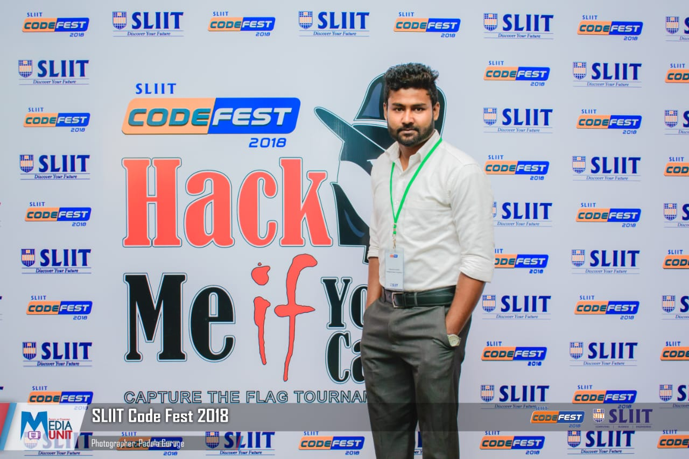
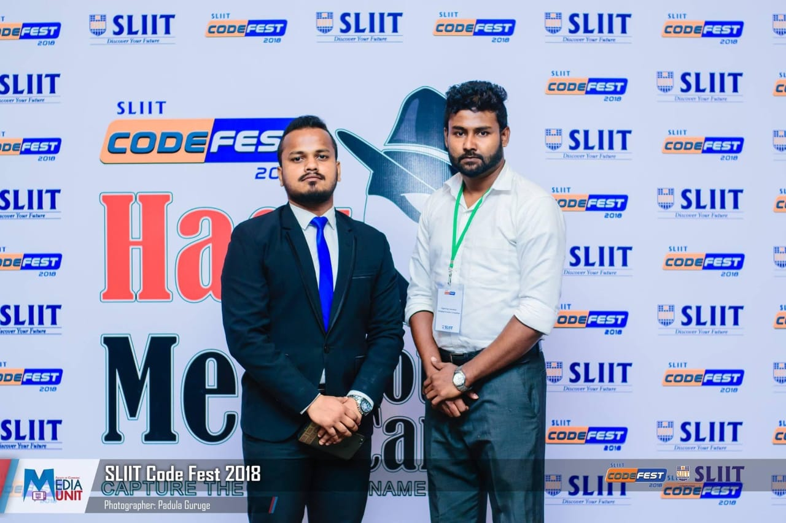
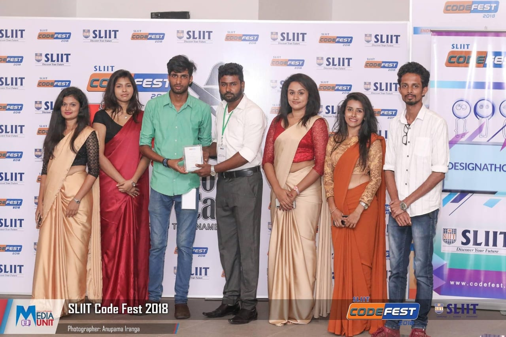
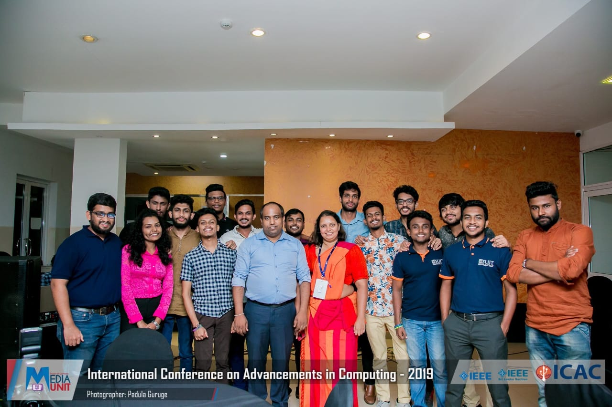

SentinelEye
AI / MLDeepfake detection system spanning audio, video and image, built to flag manipulated media across multiple modalities.
PyTorchTensorFlow/KerasMongoDB
Cybersecurity & Computer Forensics Visiting Lecturer - ML and AI Specialist, Network Security, VAPT & GRC - Researcher
Over five years across network security, VAPT, GRC and digital forensics. Currently teaching Network Security, Ethical Hacking and Digital Forensics at CINEC Campus, and leading VAPT and incident response engagements at ARIDDA Solutions. Author of 8 peer-reviewed publications, including IEEE Xplore, on intrusion detection, threat profiling, and applied machine learning in security.

I work at the intersection of teaching and practice. As Cybersecurity Visiting Lecturer at CINEC Campus, I plan and deliver undergraduate and professional-level teaching in Network Security, Ethical Hacking, Penetration Testing and Digital Forensics - building curriculum, running lab environments on real routers, switches, firewalls and virtualization platforms, and mentoring students through their own research.
In parallel, as Senior Cybersecurity Consultant at ARIDDA Solutions Ltd. (Cardiff, UK - remote), I lead VAPT engagements and risk assessments across network, cloud and application layers, run incident response from investigation through remediation, and help embed ISO 27001, NIST CSF and GDPR-aligned controls into client environments.
That combination - explaining a concept clearly enough to teach it, and having hardened the systems it describes - shapes how I approach both classrooms and client engagements.
Six years across enterprise IT, security consulting, academia and independent research.
Optimus Innovations Private Limited is one of the best providers of comprehensive IT solutions, specializing in cutting-edge cybersecurity services. Our mission is to empower businesses with innovative technology solutions that safeguard their digital assets and ensure seamless, secure operations.
MSc and BSc in Cybersecurity from SLIIT, plus certifications and training that underpin day-to-day practice.
Dissertation: Developing an Optimal Strategy to Address the Vulnerability of Image Tampering - IRJIET, 2023.
Dissertation: Human and Organizational Threat Profiling Using Machine Learning - IEEE Xplore, 2022.
Ibbagamuwa Central College
8 peer-reviewed papers spanning intrusion detection, threat intelligence, digital forensics and applied machine learning in security.
Grouped the way I actually use them - security operations, infrastructure, and the applied ML work behind the research.
Applied security and machine-learning work - research prototypes and production-style Flask applications.
Deepfake detection system spanning audio, video and image, built to flag manipulated media across multiple modalities.
GAN-based synthetic cyber-attack data augmentation for intrusion detection datasets, using WGAN-GP, CGAN and CTGAN.
Flask-based intrusion detection system integrating MITRE ATT&CK mapping, a rule-based heuristic classifier over NSL-KDD features, and a live WebSocket alert feed.
Human and organizational threat profiling using machine learning - the BSc dissertation project, published in IEEE Xplore.
Fire risk detection system built on a Random Forest classifier, with a Flask front end and a Google Maps weather widget for live conditions.
AI-powered cyberbullying detection system built for Sri Lankan universities, with a live ML backend behind a monitoring dashboard.
From student leadership to chairing sessions at an international research symposium.
Reviewer of abstracts and extended papers, and Session Chair, at the 6th CINEC International Research Symposium (CIRS), CINEC Campus.
Led a research project group at Sri Lanka Institute of Information Technology (SLIIT).
Faculty of Computing Student Community, Sri Lanka Institute of Information Technology.
Represented the Cybersecurity specialization cohort at SLIIT.
Academic life, university years, professional milestones and community involvement.
 BSc - Cybersecurity Specialization
BSc - Cybersecurity Specialization BSc Graduation
BSc Graduation BSc - With Roommates
BSc - With Roommates MSc Graduation
MSc Graduation MSc - With Classmates
MSc - With Classmates Annual Get-Together
Annual Get-Together University Life
University Life University Life
University Life University Life
University Life University Life
University Life University Life
University Life University Life
University Life Professional Life
Professional Life Professional Life
Professional Life Professional Life
Professional Life Cybersecurity Get-Together
Cybersecurity Get-Together
CodeFest
CodeFest
CodeFest
ICAC 2019 Research Conference Faculty of Computing Community
Faculty of Computing Community Assistant Secretary
Assistant Secretary Faculty Photo Day
Faculty Photo Day Faculty Photo Day
Faculty Photo Day Personal Life
Personal Life Personal Life
Personal Life Personal Life
Personal Life ICCIAN's Big Match
ICCIAN's Big Match ICCIAN's Get-Together
ICCIAN's Get-Together Optimus Innovations
Optimus Innovations Optimus Innovations
Optimus Innovations Optimus Innovations
Optimus Innovations Optimus Innovations
Optimus InnovationsOpen to consulting engagements, guest lectures, research collaboration, and speaking opportunities.